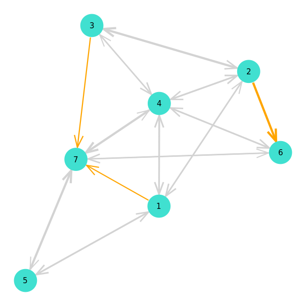

Plotting
Plotting MCF problems is done by using the GraphPlot.jl package. A plot can be generated through use of the mcfplot(pb::MCF, layout::Function=spring_layout) function.
julia> pb = load("instances/toytests/test1/", edge_dir=:single)
MCF(nv = 7, ne = 10, nk = 3)
Demand{Int64, Int64}(1, 7, 5)
Demand{Int64, Int64}(2, 6, 5)
Demand{Int64, Int64}(3, 7, 5)
julia> # draw and save figure
julia> draw(PNG("test1.png", 16cm, 16cm), mcfplot(pb))
Index
Full docs
MultiFlows.mcfplot — Functionmcfplot(pb::MCF, layout::Function=spring_layout)Plot MCF problem. MultiFlows.jl uses the GraphPlot.jl package for generating graph plots.